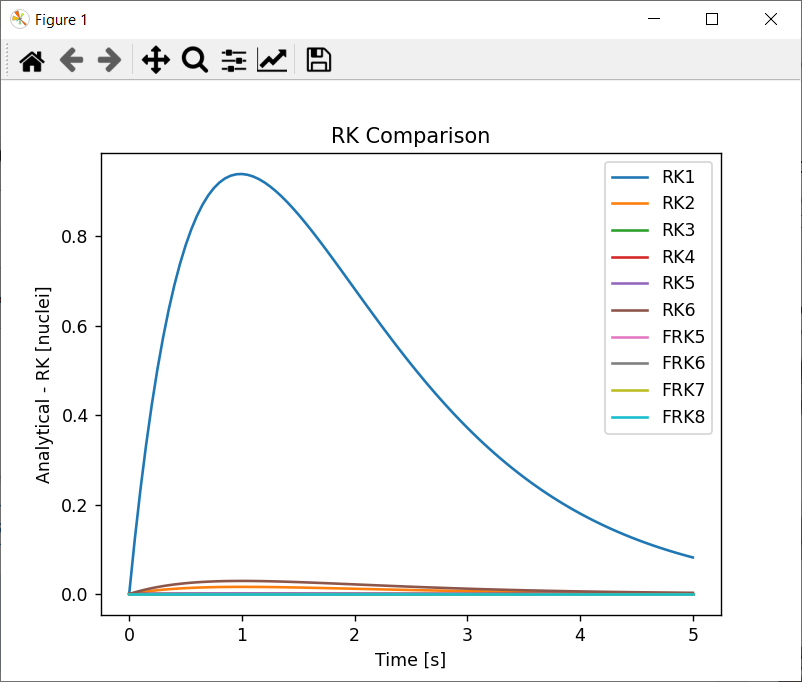

| Window Name | |
| Main Window | |
| Description | |
| Main window of application, allows user to take actions described below. | |
| Sections | |
| Main Section | Section with three main buttons. |
| Actions | |
| Input Data | Opens the window made to modify input data. |
| Calculate | Opens the window with plotting options. |
| Exit | Closes the application. |
| Window Name | |
| Input Window | |
| Description | |
| Window that allows user to set the input data. | |
| Sections | |
| Nuclear Decay | Section with input data related to nuclear decay: initial number of nuclei and Tau value. |
| Time | Section with input data related to time period: begining, end and delta. |
| Numerical Methods | Section that allows user to choose which numerical methods will be used. |
| Actions | |
| Apply | Saves the given values of input data to proper attributes, then closes the window. If the data are not correct, the window is not closed and error message is displayed in new window. |
| Cancel | Closes the window without saving the values. |
| Window Name | |
| Error Window | |
| Description | |
| Window that informs user about error in input data. | |
| Sections | |
| Error Message | Section with dynamically generated error message that highlights the incorrect input data. |
| Actions | |
| OK | Closes the window. |
| Window Name | |
| Plotting Window | |
| Description | |
| Window that allows user to choose which type of plot needs to be displayed. | |
| Sections | |
| Main Section | Section with buttons to show various plot types. |
| Actions | |
| Plot result | Displays the plot with results of nuclear decay problem. |
| Plot comparison | Displays the plot with comparison of numerical methods. |
| Plot minimal values | Displays a bar plot with minimal values of numerical methods from comparison. |
| Plot maximal values | Displays a bar plot with maximal values of numerical methods from comparison. |
| Plot minimal values | Displays a bar plot with mean values of numerical methods from comparison. |
| Cancel | Closes the window. |
| Window Name | |
| Plot | |
|  | |
| Description | |
| Window that shows the chosen plot. Generated with Matplotlib library with generic sections and actions. |